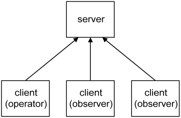
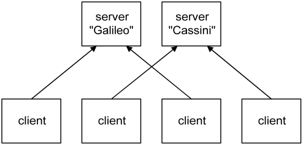
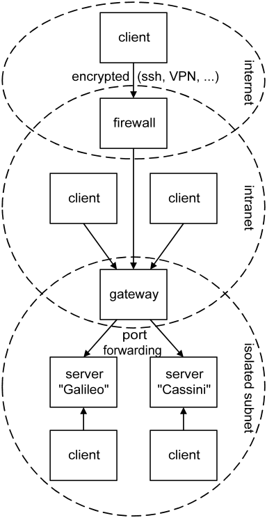

LuaVIEW offers building blocks for scripting and bottom-up programming. The client-server application framework provides an example of how to set up a script-driven application using these building blocks. When you need to set up an application that must be highly configurable or where performance and stability is an overriding concern, this framework provides a good starting point.
The LuaVIEW client-server application framework is copyright © 2003-2005 by CIT Engineering and was implemented and documented by Albert-Jan Brouwer and Roland van Zanten.
The client-server framework is included in the LuaVIEW distribution, but is not installed by default. The framework files are contained in the "clientsrv.zip" archive located in the distribution's root directory. To install the archive, extract it where it is located. When asked to replace already existing files answer affirmatively. This will overwrite the clientsrv/ subdirectory, which by default contains a couple of stubs that disable the client-server functionality. It is advisable to mass compile the subdirectory afterwards by selecting Tools>Advanced>Mass Compile from the LabVIEW menu. To uninstall the framework, replace the clientsrv/ directory with the stubs contained in the main LuaVIEW distribution archive, or simply reinstall LuaVIEW.
When setting up an application there are matters of architecture and policy that need to be arranged for. These include initialisation, configuration, access arbitration, security, as well as means of handling or logging errors and warnings. Policy tends to be fluid. By setting policies through scripts they can be easily changed even after deploying the application as a built executable. Architecture is more static, but when a LabVIEW-based architecture needs changing it tends to be painful because LabVIEW is compiled, lacks adequate abstractions for high-level programming, and ties code up with wires. The framework has a script-based architecture that provides ample flexibility for projects with evolving requirements.
The framework is split into two components. The main component is a script-based server that can be started by running "clientsrv/ClientSrv Example Server.vi". The server provides a flexible means of starting and managing sets of tasks that define what the application does: tasks can make use of any type of LuaVIEW building block and can run or execute LabVIEW VIs. The server is fully coordinated through scripts, it does not have a user interface. Graphical user interfaces (GUIs) are provided by the optional client component that can be started by running "clientsrv/ClientSrv Client.vi". The client provides a start menu for an extensible set of GUIs.
To give both components a try, start both the server and the client. The client is capable of connecting over TCP/IP to a server running on a remote machine. To connect to the local machine select Server>Connect from the client menu and specify "localhost" as the machine name in the connection dialog. Password fields can be left empty because none are configured for the example server. To run the server on the Mac, some paths specified in scripts may need adjustment [1].
The server is set up in analogy with the boot procedure of an operating system. It consists of a series of scripts that arrange for the global configuration, registration of functions, and the configuration and starting of system services. Though much simpler than a typical OS boot procedure, the purpose of these scripts is the same: to support a freely configurable and selectable set of services and tasks. The server is very lean: in its bare form it consists of a relatively small number of VIs that have only a couple of dependencies on VI.lib functions. Any further functionality is dynamically loaded and linked, and is therefore optional. The following sections will discuss the various stages of initialisation of the server.
When you start "clientsrv/ClientSrv
Example Server.vi" the script clientsrv/resources/bootstrap.lua will be
executed using the Bootstrap API VI.
The bootstrap script registers a selection of LuaVIEW
functions for later scripts and configures
global system settings. Of particular note is the "resource base path"
which is set to the directory containing the bootstrap script, that is, the
clientsrv/resources/ subdirectory. By placing all scripts and other resources
that define the server inside a resources directory and accessing them via relative paths, moving the
server resources around or choosing between independent server configurations
becomes a simple matter of redefining this one absolute path. To resolve relative paths,
retrieve the resource base path using the resources
function from Lua or call "library/file handling/Library Absolve Resource Path.vi"
from LabVIEW.
Switching between wholly independent server configurations is
prone to replication of functionality. It is therefore often preferable to
instead perform
conditional initialisation and configuration within the context of a single set
of resource scripts. The bootstrap script shows how to
use the app_kind
function to perform initialisation depending on whether the server runs under
the development system or as a built application. For the same reason there is a
"bootmode" configuration parameter that can be accessed using the bootmode
function from Lua or by accessing the "bootmode" global inside "luaview/glb_LuaVIEW Configuration Globals.vi"
from LabVIEW.
The last step in the bootstrap script starts the clientsrv/resources/access.lua script which constitutes the next stage of the server initialisation. Its job is to configure remote access of the server by clients. This access is based on the VI-server LabVIEW protocol which allows one LabVIEW runtime to call VIs inside another LabVIEW runtime over the network. Note though that it is possible to run both client and server inside the same runtime, which is convenient during development.
In addition to the standard VI-server configuration settings, you can configure passwords for the two access levels (operator and observer) as well as specify a timeout for the highest (operator) access level. Please refer to the comments inside the access script for details. As shown below, multiple clients can connect to a single server. The server arbitrates access such that only one of the connected clients can have operator access at any one time.

Connected clients have observer access by default, which allows the state of the server to be read but not changed [2]. The client with operator access is in addition able to make changes to the state of the server. Sometimes it is handy to run multiple servers, for example when you have multiple measurement computers in a laboratory. In such a situation clients can choose to connect to one or the other server.

To be able to easily discriminate between the servers when accessing them remotely it is possible to specify a name for each. Note that a client can only be connected to a single server at any one time.
In addition to arranging for access, the access script starts two service tasks named "errors" and "warnings". These tasks log error and warning message sent to them. In terms of implementation they are almost identical. The difference is semantic: a warning notifies users of something that is about to happen or might go wrong, an error notifies users of something that has gone wrong. The client is capable of showing both the warnings and errors console of the server it is connected to through the Server>Show Warnings and Server>Show Errors menu items. When server-side errors or warnings occur when the client is connected, these consoles open automatically.
When the access script is done, the clientsrv/resources/runlevels.lua script is started. It specifies a series of runlevels. Each runlevel is a task script that starts further tasks and/or provides some service. The purpose of runlevels is to enforce a well-defined order of initialisation so that tasks in a runlevel can assume the presence of resources initialised in earlier runlevels. In addition, they allow the server to be brought up to or brought back down to a particular level of initialisation. This is convenient when testing and also helps to make changes to a running server without completely stopping it: after having changed the resources initialised by a runlevel, it suffices to bring the server down to the prior runlevel and bring it back up, thus rerunning the runlevel script and applying the made changes.
The remainder of the runlevels task script provides a service that performs runlevel changes. It can be used by sending a message to the "runlevels" task that contains the name of the runlevel to change to. You can also interactively change runlevels by selecting one from the Server>Runlevels submenu of a connected client. In addition to runlevels, the runlevels.lua script also configures the names of allowed bootmodes. The bootmode used when starting the server is checked against this list. To reboot the server into a particular bootmode select Server>Runlevels>reboot. A dialog will pop up that allows selection of the bootmode to use when multiple modes are configured. Rebooting the server stops all active runlevels and completely restarts it as of the bootstrap script.
When the runlevels task is started it by default remains at the "stand by" runlevel which is the "nothing activated" runlevel that precedes any of the custom configured runlevels. However when the server was not cleanly shut down the last time it ran, the runlevels script assumes that the server is recovering from a power outage or crash. In such an eventuality it will immediately change to the runlevel that was active before. This mechanism allows a server to recover and resume its operations after a machine reboot. It does however require that you install the server such that it is automatically run when the machine boots, e.g. by installing it as a Windows service.
To dress up the server framework so as to create a custom application, first determine how the required functionality can be divided into mutually asynchronous subsets. Next, give each asynchronous subset its own task script that schedules or starts the functionality. This does not impose limitations since task scripts can make use of the various LuaVIEW building blocks as well as run or execute LabVIEW VIs.
Once it is clear what tasks the application is to be comprised of, group the tasks into runlevel scripts and add these to the runlevel table contained in the runlevels.lua script. The runlevel grouping is partly dictated by the mutual dependencies of tasks which impose an order of initialisation. Partly it depends on the preferred granularity of initialisation: even when two subsystems can be initialised simultaneously, it might still be desirable to place them in separate runlevels so that one can be tested before the other.
It is good practise to have a bootmode for testing that starts simulation instead of instrumentation tasks. This allows the application to be run through its paces without needing to connect instrumentation. Preferably provide LabVIEW-side functionality as function VIs or modules so that all the scheduling and error handling can be done by scripts. Function VIs are useful for making brief bits of LabVIEW functionality available. Modules work well for wrapping LabVIEW code that manages some subsystem or a physical instrument.
When you need the best possible performance or have existing top-level VIs, it is sometimes necessary to perform tasks completely in LabVIEW. You can do so simply by running or executing a VI. However this makes it difficult to pass configuration parameters from Lua or have the VI return errors to Lua. Also, a normal VI executing inside a task context does not respond to the signals (stop, pause, resume) sent to that task. Fortunately, accepting configuration parameters, handling signals, and throwing errors can be added to an existing VI by converting it into a plug-in.
The client displays a list of graphical user interfaces (GUIs) that can be started by double clicking or selection via the arrow keys and enter. Before GUIs can be started, the client must be connected to a server. This can be done by selecting the Server>Connect menu item. When you have previously connected to a server, it will show up in the submenu Server>Server Presets to allow a quick reconnect. After establishing a connection, the server name and its bootmode show up in the client window so as to avoid confusion as to what server is being accessed.
The client collects the list of user interfaces by searching for VIs with a "tui_" (top-level user interface) prefix. When starting a GUI, it is run as a top-level VI. The GUIs that are included in the LuaVIEW distribution persist their positions and some of their controls per server. When instantiated from a template they accept instance arguments. The client persists the collection of running GUIs and their arguments per server. The collection of open windows, their arguments, state, and positions constitute a "session". When reconnecting to a server, the client restores the prior session. This allows you to quickly switch from one to the other server: all the GUIs that were open on disconnecting will be automatically reopened.
When multiple users of the same machine run the client under their own account, each user will have separate persistence data. This is because the the persistent GUI state is stored in files under the default LabVIEW data directory, which is unique per user account. To persist state on a per-server basis, the files are stored in a subdirectory with the same name as the connected server. To clean up persistence data, select the Client>Delete Persistence Data menu item. A dialog will query the name of the server to delete the persistence data for.
Since the server is script-based, a text editor can replace many of the configuration GUIs that would otherwise be required. Only when a particular setting needs frequent or interactive changes is it worth the bother to implement a GUI. To assist with editing server-side scripts, the Edit menu of the client allows you to configure the text editor that you prefer to use.
When selecting Edit>Remote File, a tree-based file dialog will pop up that allows selection of a script residing in the resources directory on the server. To allow the file to be edited on the client machine, it is first downloaded to a temporary file. When you are done editing and exit the editor, the file is uploaded back to the server, provided that changes were made. Note that saving the file from the editor is not sufficient, the editor must be exited for the upload to commence. The number of remote files that can be edited in parallel depends on the LabVIEW configuration and platform. In single-threading mode, the limit is one. Otherwise, the limit is three on Windows. On Linux up to at least LabVIEW version 7.1, only a single editor can be opened because "System Exec" appears to be blocking the UI thread.
Configuration through scripts has further advantages. For one, there is no ambiguity as to when the changed configuration takes effect: this occurs when the modified script is next run. Any errors on applying an invalid configuration will refer back to the configuration script and offending line number within that script. Also, configuration scripts allow conditional or iterative configuration actions since they can contain arbitrary Lua code. A script can document itself by adding comments that explain the configuration parameters. Lastly, scripts are compact and readable, and therefore suitable for logging to a historical record.
The client is optional: the server can run without the client. When customising the server framework, the simplest approach is to add GUIs to the server and leave out the client and all the remote access related functionality, and rename the server to something that reflects that it is no longer a server. This simplifies matters since such GUIs will no longer be required to communicate over the VI-server protocol. There is however a fairly narrow domain of problems that benefits from operating the server solely or mostly through a separate client. Remote access is in itself not sufficient reason: you can instead use VNC, remote panels, networked X, and so on, while retaining the simplicity of programming associated with tying GUIs directly into your application.
The main purpose of the separate client is server stability and performance. Running GUIs in a separate runtime allows offloading work and complexity from the server. This is mandatory when the server is performing mission-critical or latency-sensitive measurement and control tasks. In general, while users are interactively using GUIs, it is impossible to guarantee stability and consistent performance. Particular problems are:
Having to test under separate runtimes would be a major pain. The framework is therefore set up such that client and server can also run inside the same runtime. This allows refinement and testing inside a single development environment. Separating the client and server can be postponed until deployment. As a further convenience, the top-level GUI VIs can be individually run during development without requiring a running server and client.
Client GUIs display data originating from the server. Thus, interactive GUI use will still impact the server. However, remote calls over VI-server allow fine-grained control over data transfer. When the client requires a handful of small data items, it is possible to parcel them up on the server side and transfer them in one go, thereby reducing the number of network packets. When the client needs to transfer a large amount of data, it is possible to chunk up the transfer and limit its duty cycle. See for example the subVIs used for uploading and downloading files to and from the server.
Even after offloading all superfluous work and complexity, you are still stuck with scheduling latencies caused by the underlying operating system. Also, the stability of the server application can never be better than the stability of the OS. Though average latencies are low when the system is not taxed, worst-case latencies can easily exceed a hundred milliseconds on an OS that is not real-time. To quantify the problem, measure latency under representative load conditions. When a guaranteed brief response time is required, the only options are to use a real-time OS, a real-time controller, or a hardware solution. When stability must be absolutely guaranteed, there is no substitute for an embedded controller or a hardware implementation.
A lean server is a good solution for handling complex or multiple "soft" real-time tasks that demand stability, particularly when backed up with a hardware fail-safe such as a watchdog timer. Doing all instrumentation work and online analysis inside the same LabVIEW runtime is much easier than farming out tasks to external micro or real-time controllers so as to cope with GUI latencies. Of course, these gains should outweigh the added complexity of a client-side implementation of the interactively used GUIs. Handling all instrumentation in a single server runtime also makes it easier to implement a scripting interface [3] that allows users to write and test sequences or monitoring and feedback loops. Since Lua is interpreted, such scripts can be modified and run without the need to either rebuild or stop the server application.
This section is of interest when you intend to deploy a client and server combination on a network. Security is like a chain: it is only as strong as its weakest link. In particular, server machines should not be physically accessible to untrusted persons. When they are, any software-based access scheme only gives a false sense of security. Also, security measures are often bypassed because of the inconvenience they impose on users. The client-server access scheme provided by the framework tries to avoid weak links without causing too much hassle.
The access security is role-based instead of user-based. This makes it practical to share a client machine amongst multiple users since there is no need for each user to connect anew. When using the client to make a change to the server, a dialog will request the password via which operator access is obtained. To prevent this password from being repeatedly requested, the client retains operator access afterwards. Operator access should be released when the client machine is about to be left unattended. This can be done by selecting the Server>Release Access menu item.
Of course, people will forget to release operator access. Though operator access is exclusive, this should not prevent operators that use a different client machine from obtaining operator access. It is therefore allowed to steal operator access after having been notified that some other client is holding it, but has not used it for a given amount of time. The password dialog also allows a reason to be entered so as to notify users of other clients of why or by whom operator access was grabbed. When running clients might be left unattended in a location accessible to unauthorised persons, configure the "access timeout" setting. This will cause the server to automatically revoke operator access on expiry of the specified timeout.
How secure is the scheme, really? The VI-server protocol is pretty obscure, so there is a fair amount of up-front security through obscurity. It is possible to configure an access list that allows only machines with particular IPs or from particular domains to connect. When the client machines have static IP addresses, listing them makes things pretty secure. However, IP addresses are typically issued dynamically so that access lists can at best limit connections to particular subnets.
Only VIs whose name ends with "_srv.vi" are made remotely callable by the server. That way the client can only call server-side VIs specifically designed for remote calling. When a client makes a remote call, the served VI being called checks whether the client has passed a valid certificate before commencing with the requested action. The certificates are issued by the server on checking the digested access password provided by the client. No plaintext passwords are passed over the network. This server-side issuing and checking makes it impossible to bypass the scheme by hacking the client.
The VI-server protocol is not encrypted. This makes that any data sent over it, certificates in particular, can in principle be snooped by a network sniffer and used in a spoofing attack. Such an advanced attack on a very obscure scheme is unlikely, but there are no absolute guarantees. Some added security is therefore advisable when operating over an untrusted network such as the internet. Fortunately, it is possible to tunnel the VI-server port through an ssh connection so that the VI-server communication stream becomes encrypted. A VPN will also work, but installing one solely for this purpose is not advisable since it introduces other risks by tunnelling all kinds of TCP/IP traffic.
A rather more likely risk is caused by the very network accessibility of the server. Server machines that perform some critical measurement or control task should definitely not be connected directly to the internet because of worms and viruses. But the intranet of many medium to large organisations is not a safe place either since there is always someone who manages to get troyaned or infected. Even though the VI-server protocol is not at risk, other protocols run by the server machine might have known exploits. Since measurement machines need to keep on running, it is not always possible to keep up with the latest security fixes. And available fixes might not have kept up with the latest attacks.
For these reasons it is advisable to isolate server machines inside a laboratory subnet. This makes them accessible to clients on that same subnet. To also be accessible to clients on the intranet, it is possible to set up a gateway between the intranet and subnet that forwards the VI-server ports but no other traffic. Gateway appliances are usually capable of this. When you set up a gateway on a Linux machine, you can use the redirect option of xinetd. By using a range of port numbers on the gateway it can front for multiple server machines on the isolated subnet. The diagram below summarizes how to arrange for a secure deployment when there are multiple servers, and clients connecting inside the lab, on the intranet, and over the internet.

When having isolated a server machine in this manner, it is no longer possible to open a share or use some other protocol to remotely manage the files on the server machine from outside the subnet. For this reason a "Remote File Manager" user interface is provided that allows some basic file management over the VI-server protocol. An added benefit is that a single port per server is easier to administer than multiple protocols.
When you have deployed multiple client versions and the server requires a particular client version, it is possible to specify a "client version" string in the access configuration set via the access.lua script. Setting this version string will require the client to provide it, thereby ensuring that only clients of the appropriate version can connect. On the client side, this string can be set in a global contained in clientsrv/glb_ClientSrv Globals.vi. This can be particularly handy when there are many clients deployed on diverse machines and new features are added that require an upgraded client: requiring the new version will flush out any remaining users of the old client version.
[1] On the Mac, relative paths start with a leading separator. To further complicate matters, the Mac C library uses Unix paths (with a '/' separator). C functions such as io.open therefore expect Unix paths. It is likely that Mac paths will be dropped in favour of Unix paths in some future LabVIEW release.
[2] Aside from the collapse of the server wave function to one of the eigenstates of the observable.
[3] A set of LuaVIEW functions that map to instrumentation actions. Using modules to wrap instrumentation drivers is particularly convenient. Loading, configuration, and periodic polling of the instrument can then be done from the task script that opens the module. Instrumentation actions that must be callable from all scripts can be made available through module export functions.